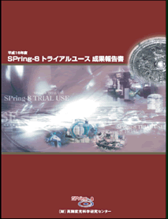

1. トライアルユースの概要2. トライアルユース実施の経緯
3. トライアルユースの結果
4. まとめ
5. トライアルユース課題実施報告書
* 送付を希望される方は、連絡先（氏名、所属、〒住所、E-mail）をご記入の上、 事務局 support@spring8.or.jp までE-mailでご連絡ください。
大型放射光施設SPring-8では、2003年度より、
（財）高輝度光科学研究センター（JASRI）が産業利用促進を目的としてトライアルユース（TU）を実施している。
概要は、「産業界等が抱える研究開発分野、応用開発分野等の問題のうち、
SPring-8の高輝度放射光を利用することにより技術的ブレイクスルーが期待されるものを対象に、
産学官の放射光利用トライアルユースを実施することにより、地域産業活性化のためのイノベーション、
新産業の創出を支援する。」であり、年度毎に課題の重点領域を設定している。
これにより、 必要な技術や装置を予め整えることが出来るため、TU施策がいっそう有効に実現されていると考えている。
重点分野としては、2003年度のイメージングと応力解析に引き続き、2004年度は、
「電子デバイス用薄膜、微量元素局所構造解析」を設定して実施した。
さらに、2005年度には「硬X線による光電子分光応用、薄膜・微量元素の構造解析・状態分析」を予定している。
支援の内容は、重点分野の実験環境整備、コーディネータ及びスタッフによる実験企画・準備、実験実施、
実験解析に至る技術支援、及び個々の実験に必要な経費などの財政支援からなる。
課題の募集・審査については、一般の課題と同時に募集が行われ、TU課題選定委員会で施策趣旨に沿って審査されている。
この報告書は実験実施後に通常提出されるExperimental Reportとは別途に提出された、TU課題実施報告書をまとめたものである。
最後に、2005年3月10日（木）に報告会が開催され、TU評価委員会による施策全体の評価（個々の課題ではなく）が実施される予定である。
＜重点領域の指定＞
「重点領域推進委員会」にて、産業応用を政策的に推進すべき分野として、
「重点産業利用」が領域指定された。トライアルユース（TU）課題は、領域指定型の重点研究課題（公募）として扱われる。
＜課題選定＞
「利用研究課題選定委員会」から選定を委嘱されたJASRIの「TU課題選定委員会」において、
41課題がTU課題に選定された。審査における考え方は次の通り。
- 一般課題の審査基準の科学技術的妥当性の下記項目のうち（ハ）と(ニ)を重視（一般課題審査の「産業利用分科会」の基準と同じ）。
科学技術的妥当性として、以下（イ）から（ニ）のうち、いずれかに該当すること
（イ）研究課題の先端性及び当該研究課題を含む科学技術分野の発展性ないしは新分野開拓への寄与
（ロ）期待される研究成果の基礎的研究分野及び基盤的技術開発分野への貢献度
（ハ）期待される研究成果の産業基盤技術としての重要性及び発展性
（ニ）研究課題の社会的意義及び社会経済への寄与度
- TU課題における戦略的重点分野との関連を重視。
- 新規利用者、新規研究テーマ（分野）、新規産官学連携の課題を重視。
＜技術支援＞
コーディネータ、産業応用・利用支援グループが中心に、課題毎に担当者をおき、
BL担当者の協力のもと全所的に支援した。技術相談から実験企画、資材の調達・実験準備、実験解析など、
必要に応じてきめ細かに対応した。
＜利用実験＞
利用実験期間の区切りは、通常の年度分けとは少し異なる。
2004A利用期が2004年2月～7月の期間、2004B利用期が2004年9月～12月の期間である。
（2004B利用期は、蓄積リング棟台風被害の影響で例年と異なった期間となったが、 TUへの悪影響は避けられた。）
＜報告＞
2005年3月10日（木）に、2004年度のTU成果報告会およびTU評価委員会を開催し、
その結果についてはSPring-8ホームページに掲載予定である。
トライアルユース（TU）に参加した2004A利用期と2004B利用期の実施課題と参加機関と参加人員を表1と表2に示す。 これらの実績を整理しつつ、特徴を次にまとめる。
＜提案及び実施結果＞
| 実験責任者所属別 | 分野別 | ||||
| 申請 | 実施 | 申請 | 実施 | ||
| 産 | 57 | 39 | 薄膜 | 22 | 13 |
| 学官（産） | 27 | 10 | 微量XAFS | 34 | 16 |
| 学官 | 15 | 1 | 一般 | 43 | 21 |
| 合計 | 99 | 50 | 合計 | 99 | 50 |
|
学官（産）：大学または公的機関の申請に民間が共同で参加 学官：大学または公的機関のみの申請 薄膜：薄膜の構造解析 微量XAFS：微量元素の局所構造解析 |
|||||
＜参加機関及び人員＞
- 参加規模
・ 申請：161名/40社、109名/22機関（内 42名/JASRI）
・ 利用実験参加：126名/34社、81名/19機関（内 9名/JASRI） - 新規参加企業
・ 新規参加企業：24社（同一企業の新規部署を含む：24社）
・ 新規分野：12
＜実施ビームライン、シフト数＞
| BL01B1 | 7課題 | 39シフト | |
| BL19B2 | 33課題 | 177シフト | （産業利用ビームライン） |
| BL37XU | 2課題 | 9シフト | |
| BL46XU | 8課題 | 63シフト | |
| 合計：288シフト/4ビームライン | |||
＜特徴＞
- 課題および参加企業の分野
昨年度に比べて、エレクトロニクス、素材関連の課題が倍増している。 これらは、重点領域の設定から予想された通りであり、施策を反映していると考えている。 ただし、化学系の企業からの課題で、具体的なエレクトロニクス製品に直結した課題は、エレクトロニクス分野として数えた。エレクトロニクス 24課題 素材 19課題 環境・エネルギー 6課題 薬品・食品 0課題 その他 1課題 - 新規参加企業
新規参加企業24社の中で、13社は実験責任者として課題を実施した。 これはTU施策の浸透に伴い、 JASRIスタッフと課題申請前に充分に相談がなされるなど、支援が充実してきていることによる。 新規企業は、化学系の企業が多く参加している。 - 重点分野設定との関係
重点分野として、電子デバイス用薄膜、微量元素局所構造解析分野を指定して募集した。 いずれの分野においても、ほぼ二倍の応募があり、ニーズの高さがうかがえる。 なお、TUとしては、不採択となった課題の何割かは、一般の課題審査で採択されている。 電子デバイス用薄膜の構造解析では、LSI用ゲートと層間絶縁膜、液晶用有機薄膜、 ストレージ用薄膜などの課題が狙い通り実施され、微量元素局所構造解析では、蛍光体、触媒などは狙い通りであった。 こうした状況も、TU施策が浸透してきた結果と考えている。
一方、重点領域以外では、広範な分野に広がっているが、電池関連の課題が複数の企業で実施されている。
＜前回との比較＞
- 参加規模
応募、実施課題数、ともに順調に増加している。 今回は、特に、民間の参加が161名/40社（人員で5割、企業で3割）と大幅に増加しており、 施策の意義が浸透するとともに、民間企業でのニーズがさらに顕在化しつつあることがうかがえる。 - 実施参加機関
先に述べたように、新規参加企業24社の中で、13社は実験責任者として課題を実施した。 これらの企業のほとんどは、JASRIスタッフと課題申請前から充分相談がなされ、 申請しており、年度計画としてTUを実施できる利点が充分に活かされているものと考えている。 一方、大学および公的機関の参加は、前年度に比べて機関、人員ともに多少だが減少した。 - 特徴
設定された重点領域に合わせてエレクトロニクス関連分野の課題が顕著であった。 一方、参加企業で見ると、 重要な部材を大手エレクトロニクス企業へ供給している企業が参画しており、 ある程度施策の意図が満たされていると考えている。また、化学系の企業の参加も、ある程度意図した通りであった。
トライアルユース（TU）は年度計画として実施して2年目であり、充分な計画に基づいて、
今年度もさらに円滑に実施できた。 ユーザの反応は高く、予定を大幅に上回る課題の応募があった。
期待の大きさがうかがえたこともあり、TU採択課題数を積み増ししてみたが、
今回もほぼ二倍の高い競争（倍率）となってしまった。しかしながら、TUとして不採択となった課題も、
一般の課題として再度審査されることで、 一部は緩和されている。
内容についてみると、企業の新規参加が半分以上、新規分野も約1/3を占め、今回も、当該施策の趣旨にそって実施できた。
これは応募の多さと併せ、潜在ニーズおよび潜在ユーザが多く存在することを意味している。
さらに、新規ユーザや新規分野の課題も含め、 多くの課題で成果や次への手掛りを得ており、
今回も試験的利用を越えた内容も生まれている。 年度計画および重点分野の設定で充分な準備が出来たことが大きいと考えている。
最後に、再度の施策実現にご尽力頂いた国の諸関係機関およびJASRIビームライン担当者など、
実施に関わって頂いた現場の方々に、 TU施策の実施責任者として、あらためて感謝いたします。
2004A 利用期 トライアルユース実施課題 （表１）
2004B 利用期 トライアルユース実施課題 （表１－２）
2004A・B利用期 参加機関と参加人数 （表２）